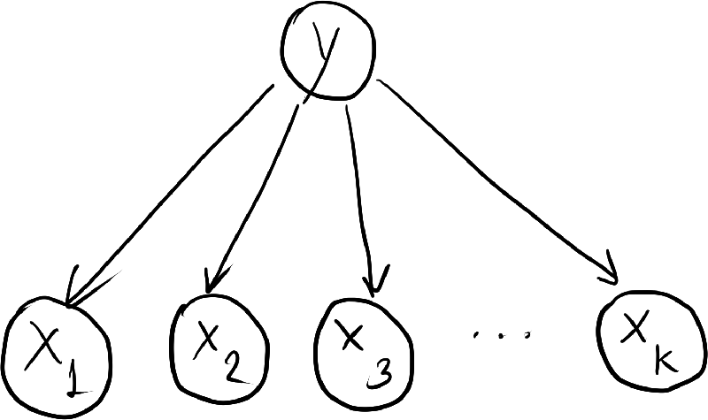
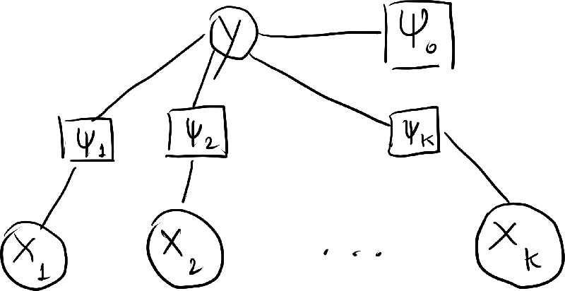
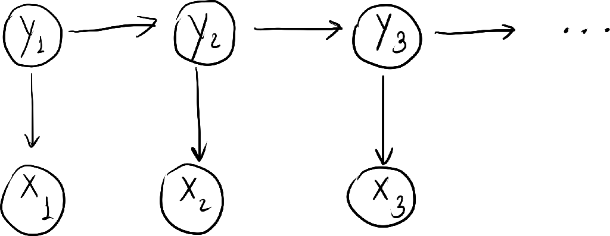
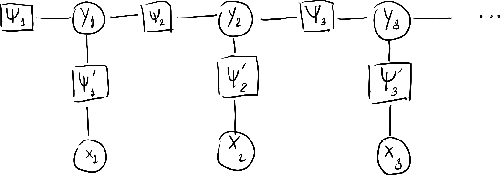

\(
\def\sc#1{\dosc#1\csod}
\def\dosc#1#2\csod{{\rm #1{\small #2}}}
\newcommand{\dee}{\mathrm{d}}
\newcommand{\Dee}{\mathrm{D}}
\newcommand{\In}{\mathrm{in}}
\newcommand{\Out}{\mathrm{out}}
\newcommand{\pdf}{\mathrm{pdf}}
\newcommand{\Cov}{\mathrm{Cov}}
\newcommand{\Var}{\mathrm{Var}}
\newcommand{\ve}[1]{\mathbf{#1}}
\newcommand{\mrm}[1]{\mathrm{#1}}
\newcommand{\etal}{{et~al.}}
\newcommand{\sphere}{\mathbb{S}^2}
\newcommand{\modeint}{\mathcal{M}}
\newcommand{\azimint}{\mathcal{N}}
\newcommand{\ra}{\rightarrow}
\newcommand{\mcal}[1]{\mathcal{#1}}
\newcommand{\X}{\mathcal{X}}
\newcommand{\Y}{\mathcal{Y}}
\newcommand{\Z}{\mathcal{Z}}
\newcommand{\x}{\mathbf{x}}
\newcommand{\y}{\mathbf{y}}
\newcommand{\z}{\mathbf{z}}
\newcommand{\tr}{\mathrm{tr}}
\newcommand{\sgn}{\mathrm{sgn}}
\newcommand{\diag}{\mathrm{diag}}
\newcommand{\Real}{\mathbb{R}}
\newcommand{\sseq}{\subseteq}
\newcommand{\ov}[1]{\overline{#1}}
\DeclareMathOperator*{\argmax}{arg\,max}
\DeclareMathOperator*{\argmin}{arg\,min}
\)
Introduction to Conditional Random Fields
This note is written as I read "An Introduction to Conditional Random Fields" by Sutton and McCallum. However, I took material from some sections from some other sources.
1 Modeling
1.1 Notations
- We consider probability distributions over sets of random variable $V = X \cup Y$.
- $X$ is the set of input variables, which are observed.
- $Y$ is the set of output variables, which we want to predict.
- All values of the random variables in $V$ comes from a set $\mathcal{V}$.
- $\mathcal{V}$ can be either discrete or continuous.
- For simplicity, $\mathcal{V}$ is discrete in this note.
- Notations for variable assignments.
- An assignment of a value to each of the variables in $X$ is denoted by a vector $\ve{x}$.
- For each variable $i \in X$, let $x_i$ and $\ve{x}[i]$ denote the value assigned ot $i$ by $\ve{x}$.
- Let $a$ be a subset of $X$. The assignment of variables in $a$ by $\ve{x}$ is denoted by $\ve{x}_a$ amd $\ve{x}[a]$.
- We define $\ve{y}$, $y_i$, $\ve{y}[i]$, $\ve{y}_a$, and $\ve{y}[a]$ similarly.
- We shall use $\ve{v}$, $v_i$, $\ve{v}[i]$, $\ve{v}_a$, and $\ve{v}[a]$ when we want to address members of $V$ that we don't know whether they belong to $X$ or $Y$.
- Let $\ve{1}_{\{x = x'\}}$ denote an indicator function that is $1$ when $x = x'$ and $0$ otherwise.
- Fix a variable assignement $y_i$, the sum $\sum_{\ve{y} \backslash y_i}$ denotes the sum over all assignments $\ve{y}$ where the variable $i$ is assigned to $y_i$.
1.2 Undirected Graphical Models
- An undirected graphical model (aka a Markov random field, a Markov network, or a Gibbs distribution) is a probability distribution $p(\ve{x},\ve{y})$ that has the following particular form:
\begin{align*}
p(\ve{x},\ve{y}) \propto \prod_{a \in \mcal{F}} \Psi_a(\ve{x}_a, \ve{y}_a)
\end{align*}
where
- $\mcal{F}$ is a set of subsets of $V$.
- $\Psi_a(\ve{x}_a, \ve{y}_a)$ is called a factor or a compatibility function. Conceptually, it measures the "compatibility" of the assignements of random varialbes in the set $a$. The higher it is, the more likely the assignement $(\ve{x}_a, \ve{y}_a)$.
- We note that, for any two factors $\Psi_a$ and $\Psi_b$, it is reasonable to require that $a - b \neq \emptyset$ and $b - a \neq \emptyset$. Otherwise, say $a \subseteq b$, we can just combining $\Psi_a$ into $\Psi_b$ by multiplying them together and just say $\Psi_b := \Psi_a \Psi_b$.
- The set of factors $F = \{ \Psi_a : a \in \mcal{F} \}$ is called the local function.
- When we write the probability distribution more precisely, it takes the form:
\begin{align}
p(\ve{x}, \ve{y}) = \frac{1}{Z} \prod_{a \in \mcal{F}} \Psi_a(\ve{x}_a, \ve{y}_a) \label{undirected-graphical-model}
\end{align}
where $Z$ is the normalization constant which is equal to
\begin{align*}
Z = \sum_{\ve{x},\ve{y}} \prod_{a \in \mcal{F}} \Psi_a(\ve{x}_a, \ve{y}_a).
\end{align*}
The quantity $Z$, consider as a function of the set $F$ of factors, is called the partition function.
- Writing a probability distribution as a product of factors, in the form of $\eqref{undirected-graphical-model}$, is called a factorization of the probability distribution.
- We assume further that the factors are of the form:
\begin{align*}
\Psi_a(\ve{x}_a, \ve{y}_a) = \exp\bigg( \sum_{k=1}^{K(a)} \theta_{ak} f_{ak}(\ve{x}_a, \ve{y}_a) \bigg)
\end{align*}
where
- $K(a)$ is just the number of terms that $\Psi_a$ has,
- $\theta_{ak} \in \Real$ is a scaling parameter, and
- $f_{ak}(\ve{x}_a, \ve{y}_a)$ is called a feature function or a sufficiency statistics.
- In this note, because $\mcal{V}$ is discrete, we can always write all feature functions as a weighted sum of products of indicator functions.
- The trick is to let $k$ goes through all possible assignments $(\ve{x}_a^{k}, \ve{y}_a^{k})$. Then, we let $\theta_{ak}$ take the value $\log \Psi_{a}(\ve{x}_a^k, \ve{y}_a^k)$.
- In this way, we may write
\begin{align*}
\Psi_a(\ve{x}_a, \ve{y}_a) = \exp\bigg( \sum_{k} \theta_{ak} \ve{1}_{\{\ve{x}_a = \ve{x}_a^k\}} \ve{1}_{\{ \ve{y}_a = \ve{y}_a^k \}} \bigg).
\end{align*}
- The collections of $\theta_{ak}$s, denoted by just $\theta$, is the parameters of the undirected graphical model.
1.3 Graph Representations
1.4 Directed Graphical Models
- A directed graphical models (aka a Bayesian network) describes how a distribution factorizes into local conditional probability distributions.
- Notations:
- Let $G = (V,E)$ be a directed acyclic graph.
- For each $i \in V$, let $\pi(i)$ denote the set of parents of $u$; i.e., those vertices $j$ such that the directed edge $(j,i)$ is in $E$.
- A directed graphical model is a probability distribution of the form:
\begin{align*}
p(\ve{x},\ve{y}) = p(\ve{v}) = \prod_{j \in V} p(v_i | \ve{v}_{\pi(i)}).
\end{align*}
- Note that we do not see $1/Z$ in the equation above. This is because, if you were to calculate $Z$, you would get $1$ due to how $p$ is defined.
1.4.1 Example: Naive Bayes
- We want to solve the problem of classification.
- We want to predict a single, discrete class label $y \in \{1, 2, \dotsc, C\}$ given a vector of features $\ve{x} = (x_1, x_2, \dotsc, x_K)$.
- That is, we want to compute $$\argmax_y\ p(y|\ve{x}).$$
- This makes it necessary for us to model $p(y|\ve{x})$.
- In the Naive Bayes model, we assume that, once the class label is known, all the features are independent. Mathematically:
\begin{align*}
p(\ve{x}|y) = \prod_{k=1}^K p(x_k | y).
\end{align*}
So,
\begin{align*}
p(y,\ve{x}) = p(y) \prod_{k=1}^K p(x_k | y).
\end{align*}
- Dependencies between the random variables are represented by the following directed graph.

- Getting to the graphical modeling language, we can rewrite the above expression in terms of factors. We let
\begin{align*}
p(y) &\propto \Psi_0(y) \\
p(x_k|y) &\propto \Psi_k(y,x_k).
\end{align*}
As a result,
\begin{align}
p(y,\ve{x}) = \frac{1}{Z} \Psi_0(y) \prod_{k=1}^k \Psi_k(y,x_k). \label{naive-bayes-factorization}
\end{align}
where
\begin{align*}
Z = \sum_{y,\ve{x}} \Psi_0(y) \prod_{k=1}^k \Psi_k(y,x_k).
\end{align*}
- The factor graph of the probability distribution is as follows:

- A common way to model $\Psi_0$ is just to make the values $\Psi_0(1)$, $\Psi_0(1)$, $\dotsc$, $\Psi_0(C)$ the parameters of the model itself. For all $y \in \{1, 2, \dotsc, C \}$, we let
\begin{align*}
\theta_y = \log \Psi_0(y).
\end{align*}
In this way, we may write
\begin{align*}
\Psi_0(y) = \exp( \theta_y ).
\end{align*}
- Now, observe that
\begin{align*}
\Psi_0(y) = \exp\bigg( \sum_{y'} \theta_{y'} \ve{1}_{\{y = y'\}} \bigg).
\end{align*}
Setting $f_{y'}(y) = \ve{1}_{\{y=y'\}}$, the above becomes:
\begin{align*}
\Psi_0(y) = \exp\bigg( \sum_{y'} \theta_{y'} f_{y'}(y) \bigg).
\end{align*}
This casts modeling of $p(y)$ in the language of feature functions.
- Again, a common way to model $\Psi_k(y, x_k)$ is to just make all possible values of the function the parameters of the model. So, let
\begin{align*}
\theta_{k,y',x'} = \log \Psi_k(y', x').
\end{align*}
This lets us rewrite the factor as follows:
\begin{align*}
\Psi_k(y,x_k)
&= \exp(\theta_{k,y,x_k}) \\
&= \exp\bigg( \sum_{y',x'} \theta_{k,y',x'} \ve{1}_{\{y=y'\}} \ve{1}_{\{x_k=x'\}} \bigg) \\
&= \exp\bigg( \sum_{y',x'} \theta_{k,y',x'} f_{y',x'}(y,x_k) \bigg)
\end{align*}
where
\begin{align*}
f_{y',x'}(y,x_k) = \ve{1}_{\{y=y'\}} \ve{1}_{\{x_k=x'\}}.
\end{align*}
- Putting everything together,
\begin{align*}
p(y,\ve{x})
&= \frac{1}{Z} \Psi_0(y) \prod_{k=1}^K \Psi_k(y,x_k) \\
&= \frac{1}{Z} \exp(\theta_y) \prod_{k=1}^K \exp(\theta_{k,y,x_k}) \\
&= \frac{1}{Z} \exp\bigg( \theta_y + \sum_{k=1}^K \theta_{k,y,x_k} \bigg).
\end{align*}
Using Bayes' rule, the conditional probability is given by:
\begin{align*}
p(y|\ve{x})
&= \frac{p(y,\ve{x})}{p(\ve{x})}
= \frac{p(y,\ve{x})}{\sum_{y'} p(\ve{x}|y')} \\
&= \frac{\frac{1}{Z} \exp(\theta_y + \sum_{k} \theta_{k,y,x_k})}{\sum_{y'} \frac{1}{Z} \exp(\theta_{y'} + \sum_{k} \theta_{k,y',x_k})} \\
&= \frac{\exp(\theta_y + \sum_{k} \theta_{k,y,x_k})}{\sum_{y'} \exp(\theta_{y'} + \sum_{k} \theta_{k,y',x_k})}.
\end{align*}
From this, we may process to compute the $\argmax_y\ p(y|\ve{x})$.
- Notice that, when we only want to compute $p(y|\ve{x})$, there is no need to explicitly compute $Z$ at all.
1.4.2 Example: Hidden Markov Model
- A hidden markov model (HMM) models a sequence of observation $\ve{x} = (x_t)_{t=1}^T$ by assuming that there is an underlying sequence of states $\ve{y} = (y_t)_{t=1}^T$ drawn from a finite set $S$.
- The model makes two assumptions.
- It assumes taht each state depends only on its immediate predecessor. That is, $y_t$ only depends on $y_{t-1}$.
- The observation $x_t$ only depends on $y_t$.
- Hence, the probability according to the HMM is given by
\begin{align*}
p(\ve{y},\ve{x}) = p(y_1) p(x_1|y_1) \prod_{t=2}^T p(y_t | y_{t-1}) p(x_t | y_t),
\end{align*}
and it can be represented by the following directed graph.

- We can then further elaborate the model by introducting factor functions:
\begin{align*}
p(\ve{x},\ve{y})
&= \frac{1}{Z} \Psi_1(y_1) \Psi_1'(y_1, x_1) \prod_{t=2}^T \Psi_t(y_t,y_{t-1}) \Psi_t'(x_t, y_t).
\end{align*}
The factor graph is given below.

- Let us write $p(\ve{x},\ve{y})$ with feature functions.
- First, let us rewrite $\Psi_1(x_1)$ as $\Psi_1(y_1, y_0)$ where $y_0$ is a state that always take a single value so $p(y_0) = 1$ as an identity. We now have that:
\begin{align*}
p(\ve{x},\ve{y}) = \frac{1}{Z} \prod_{t=1}^T \Psi_t(y_t, y_{t-1}) \Psi_t'(y_t, x_t).
\end{align*}
- Next, let $O$ denote the set of observations that each $x_t$ may take.
- We also assume that the transition probabilities are time dependent. That is, for any $t_1$ and $t_2$,
\begin{align*}
\Psi_{t_1}(s, s') &= \Psi_{t_2}(s,s') \\
\Psi'_{t_1}(s,o) &= \Psi'_{t_2}(s,o)
\end{align*}
for any $s,s' \in S$ and $o \in O$. So, instead, we have:
\begin{align*}
p(\ve{x},\ve{y}) = \prod_{t=1}^T \Psi(y_t, y_{t-1}) \Psi'(y_t, x_t).
\end{align*}
- Taking
\begin{align*}
\theta_{s,s'} &= \log \Psi(s, s') \\
\mu_{s,o} &= \log \Psi'(s, o),
\end{align*}
we may rewrite $p(\ve{x},\ve{y})$ as follows:
\begin{align*}
p(\ve{x}, \ve{y}) = \frac{1}{Z} \prod_{t=1}^T \exp\bigg( \sum_{s,s' \in S} \theta_{s,s'} \ve{1}_{\{y_{t} = s\}} \ve{1}_{\{y_{t-1} = s'\}} + \sum_{s\in S}\sum_{o \in O} \mu_{s,o} \ve{1}_{\{ y_t = s \}} \ve{1}_{\{x_t = o \}} \bigg).
\end{align*}
- The above expression can be written more compactly.
- Note that both $\ve{1}_{\{y_{t} = s\}} \ve{1}_{\{y_{t-1} = s'\}}$ and $\ve{1}_{\{ y_t = s \}} \ve{1}_{\{x_t = o \}}$ are expressions that involve $y_t$, $y_{t-1}$, and $x_t$. So, we may say that both are special cases of the feature function $f_k(y_t, y_{t-1}, x_t)$ for some index variable $k$.
- Now, let $K$ be the number of the above feature functions. (There are $|S|^2 + |S||O|$ functions in total.) We have that we may rewrite $p(\ve{x},\ve{y})$ as
\begin{align*}
p(\ve{x}, \ve{y}) = \frac{1}{Z} \prod_{t=1}^T \exp\bigg( \sum_{k=1}^K \theta_k f_k(y_t, y_{t-1}, x_t) \bigg).
\end{align*}
1.5 Discriminative Analogues to Directed Graphical Models
- In machine learning literature, there is a distinction between generative models and discriminitive models. The distinction varies between contexts and is not quite well spelled out.
- We are interested in this distinction because conditional random fields (CNFs), the object of study of this note, are discriminative models.
- In the context of this note:
- A generative model models the joint distribution $p(\ve{x},\ve{y})$.
- On the other hand, a discriminative model only models the conditional distribution $p(\ve{y}|\ve{x})$.
- Say, our model is a graphical model with
$$p(\ve{x},\ve{y}) \propto \exp\bigg(\sum_k \theta_{ak} f_{ak}(\ve{x}_a, \ve{y}_a)\bigg).$$
We have that, in a generative mode, we have to compute
\begin{align*}
p(\ve{x},\ve{y})
= \frac{1}{Z} \exp\bigg(\sum_k \theta_{ak} f_{ak}(\ve{x}_a, \ve{y}_a) \bigg)
= \frac{\exp(\sum_k \theta_{ak} f_{ak}(\ve{x}_a, \ve{y}_a))}{ \sum_{\ve{x},\ve{y}} \exp(\sum_k \theta_{ak} f_{ak}(\ve{x}_a, \ve{y}_a))}.
\end{align*}
Whereas in a discriminative model, we only need to compute
\begin{align*}
p(\ve{y}|\ve{x})
= \frac{1}{Z(\ve{x})} \exp\bigg(\sum_k \theta_{ak} f_{ak}(\ve{x}_a, \ve{y}_a) \bigg)
= \frac{\exp(\sum_k \theta_{ak} f_{ak}(\ve{x}_a, \ve{y}_a))}{ \sum_{\ve{y}} \exp(\sum_k \theta_{ak} f_{ak}(\ve{x}_a, \ve{y}_a))}.
\end{align*}
- If we are only interested in $\argmax_\ve{y}\ p(\ve{y}|\ve{x})$, then the problem simplifies a lot.
- There is no need to compute the sum $Z(\ve{x})$ at all. We just need to identify $y$ that maximizes $\exp(\sum_k \theta_{ak} f_{ak}(\ve{x}_a, \ve{y}_a))$.
- Moreover, if there is a factor $\theta_{ak} f_ak(\ve{x}_a,\ve{y}_{a})$ where $\ve{y}_a$ is just an empty vector (and so does not depend on $\ve{y}$), then we can treat this factor as a constant that can be dropped from the optimization process. As a result, we may say that, for a discriminative model, we do not have to model the dependencies between the observed variables. A model of $p(\ve{x})$ is thus not necessary.
- Minka offers a perspective on the advantage of discriminative models [2005].
- Suppose we have a generative model $p$ with parameters $\theta$. It thus takes the form:
\begin{align*}
p(\ve{x},\ve{y}; \theta) = p(\ve{y};\theta) p(\ve{x}|\ve{y};\theta).
\end{align*}
- To find the parameter $\theta$, we assume that (1) we have a prior on the parameters $p(\theta)$, and (2) we have training data $\mcal{D} = \{ (\ve{x}^{(1)}, \ve{y}^{(1)}), \dotsc, (\ve{x}^{(n)}, \ve{y}^{(n)}) \}$. We find $\theta$ that maximizes
\begin{align*}
\mathfrak{p}_1(\mcal{D},\theta)
= p(\theta) \prod_{i=1}^n p(\ve{x}^{(i)}, \ve{y}^{(i)}; \theta)
= p(\theta) \prod_{i=1}^n p(\ve{y}^{(i)}; \theta) p(\ve{x}^{(i)} | \ve{y}^{(i)}; \theta).
\end{align*}
- For a discriminitive model, however, we choose $\theta$ by maximizing
\begin{align*}
\mathfrak{p}_2(\mcal{D},\theta)
= p(\theta) \prod_{i=1}^N p(\ve{y}^{(i)} | \ve{x}^{(i)}; \theta)
= p(\theta) \prod_{i=1}^N \frac{p(\ve{x}^{(i)} | \ve{y}^{(i)}; \theta)}{\sum_{\ve{y}} p(\ve{x}^{(i)} | \ve{y}^{(i)}; \theta)}.
\end{align*}
- There's something disturbing about the form of $\mathfrak{p}_2$. We multiply conditional probabilities together. Each probability is conditioned on different values of $\ve{x}^{(i)}$. It is hard to interpret $p_2$ as a probability arising from a well-defined random process.
- Minka observed that we can derive $p_2$ from a well-defined random process. We can define a bigger generative model with two sets of parameters $\theta$ and $\theta'$ from the old one:
\begin{align*}
q(\ve{x},\ve{y};\theta,\theta') = p(\ve{y}|\ve{x};\theta) p(\ve{x};\theta')
\end{align*}
where
\begin{align*}
p(\ve{x};\theta') = \sum_{\ve{y}} p(\ve{x},\ve{y};\theta').
\end{align*}
In other words, in this bigger random process, we generate $\ve{x}$ first using parameteres $\theta'$. Then, we use parameters $\theta$ to generate $\ve{y}$ from $\ve{x}$.
- Now, to find the optimal parameters for the new model, we maximize
\begin{align*}
\mathfrak{q}(\mcal{D}, \theta, \theta')
&= p(\theta) p(\theta') \prod_{i=1}^N q(\ve{x}^{(i)}, \ve{y}^{(i)}; \theta, \theta') \\
&= p(\theta) p(\theta') \prod_{i=1}^N p(\ve{y}^{(i)}|\ve{x}^{(i)};\theta) p(\ve{x}^{(i)};\theta') \\
&= \bigg( p(\theta) \prod_{i=1}^N p(\ve{y}^{(i)}|\ve{x}^{(i)};\theta) \bigg) \bigg( p(\theta') \prod_{i=1}^N p(\ve{x}^{(i)};\theta') \bigg) \\
&= \mathfrak{p}_2(\mcal{D}, \theta) \bigg( p(\theta') \prod_{i=1}^N p(\ve{x}^{(i)};\theta') \bigg).
\end{align*}
When the above function is optimized, we get the same optimal $\theta$ as when we optimize $\mathfrak{p}_2$ alone.
- Minka's observation implies that discriminative model would work better than a generative model when fitting the training set. This is because it implicitly represents a larger model with two set of parameters.
- We have seen that discriminative models (1) entail less computation and (2) are better at fitting the training set. However, generative models have several advantages.
- Generative models are more suitable for handling latent variables, partially-labelled data, and unlabelled data.
- Generative models are less prone to overfitting the training set.
- Ng and Jordan observed that generative models tend to perform better when the training set is small [2001].
- If the problem requires the ability to predict future inputs and outputs, then generative models are the only way to go.
- Now, we will look at some discriminative models that are counterparts of the generative models in Section 1.4.
1.5.1 Multinomial Logistic Regression and Naive Bayes
- Multinomal logistic regression is a model that solves multiclass classification problem.
- We are given a feature vector $\ve{x} = (x_1, x_2, \dotsc, x_K)$, and we want to predict a class label $y \in \{1, 2, \dotsc, C\}$.
- Casting the problem in terms of probabilities, we want to compute $p(y|\ve{x})$.
- The gist of it is to take the input $\ve{x}$, apply an affine transformation to $\ve{x}$ to get a $C$-dimensional vector (the logits), and then apply a softmax to get the probabilies.
- Mathematically, we have:
\begin{align*}
\begin{bmatrix}
p(1|\ve{x}) \\
p(2|\ve{x}) \\
\vdots \\
p(C|\ve{x})
\end{bmatrix}
= \mathrm{softmax}\left(
\begin{bmatrix}
\theta_1 \\
\theta_2 \\
\vdots \\
\theta_C
\end{bmatrix}
+
\begin{bmatrix}
\theta_{11} & \theta_{12} & \cdots & \theta_{1K} \\
\theta_{21} & \theta_{22} & \cdots & \theta_{2K} \\
\vdots & \vdots & \ddots & \vdots \\
\theta_{C1} & \theta_{C2} & \cdots & \theta_{CK}
\end{bmatrix}
\begin{bmatrix}
x_1 \\
x_2 \\
\vdots \\
x_K
\end{bmatrix}
\right).
\end{align*}
In other words,
\begin{align*}
p(y|\ve{x}) = \frac{1}{Z(\ve{x})} \exp \bigg( \theta_y + \sum_{i=1}^K \theta_{yk} x_{k} \bigg)
\end{align*}
where
\begin{align*}
Z(\ve{x}) = \sum_{y=1}^C \exp \bigg( \theta_y + \sum_{i=1}^K \theta_{yk} x_{k} \bigg).
\end{align*}
- We say that multinomial logistic regression is the discriminative counterpart of naive Bayes. This is because we can derive the former as a special case of the latter.
- The only thing we need to do is to change the form of the factors $\Psi_{k}(y,x_k)$ in $\eqref{naive-bayes-factorization}$. We just set
\begin{align*}
\Psi_k(y, x_k) = \exp( \theta_{yk} x_k ),
\end{align*}
and it would follow that:
\begin{align*}
p(y,\ve{x})
&= \frac{1}{Z} \exp(\theta_y) \prod_{k=1}^K \exp(\theta_{yk} x_k) \\
&= \frac{1}{Z} \exp\bigg( \theta_y + \sum_{k=1}^K \theta_{yk} x_k \bigg).
\end{align*}
So,
\begin{align*}
p(y|\ve{x})
&= \frac{p(y,\ve{x})}{\sum_y p(y,\ve{x})}
= \frac{ \frac{1}{Z} \exp( \theta_y + \sum_{k=1}^K \theta_{yk} x_k )}{ \sum_y \frac{1}{Z} \exp( \theta_y + \sum_{k=1}^K \theta_{yk} x_k )} \\
&= \frac{ \exp( \theta_y + \sum_{k=1}^K \theta_{yk} x_k )}{ \sum_y \exp( \theta_y + \sum_{k=1}^K \theta_{yk} x_k )} \\
&= \frac{1}{Z(\ve{x})} \exp \bigg( \theta_y + \sum_{i=1}^K \theta_{yk} x_{k} \bigg).
\end{align*}
-
The factor functions can also be rewritten as:
\begin{align*}
\Psi_k(y, x_k) = \exp\bigg( \sum_{y'} \theta_{y'k} f_{y'k}(y, x_k) \bigg)
\end{align*}
where
\begin{align*}
f_{y'k}(y,x_k) = \ve{1}_{\{ y=y' \}} x_k.
\end{align*}
So, multinomial logistic regression also fits into our graphical modeling langauge.
1.5.2 Linear Chain CRFs and HMMs
- We have not really defined what a conditional random field (CRF) is.
- However, a type of linear chain CRF is what we get when we derive the conditional probability $p(\ve{y}|\ve{x})$ from an HMM.
- Recall from Section 1.4.2 that an HMM is given by:
\begin{align*}
p(\ve{x},\ve{y}) = \frac{1}{Z} \prod_{t=1}^T \exp\bigg( \sum_{k=1}^K \theta_k f_k(y_t, y_{t-1}, x_t) \bigg).
\end{align*}
- So, the linear chain CRF in question is given by:
\begin{align*}
p(\ve{y}|\ve{x})
&= \frac{p(\ve{y},\ve{x})}{\sum_{\ve{y}} p(\ve{y}, \ve{x})}
= \frac{
\prod_{t=1}^T \exp(\sum_k \theta_k f_k(y_t,y_{t-1},x_t))
}{
\sum_{\ve{y}} \prod_{t=1}^T \exp(\sum_k \theta_k f_k(y_t,y_{t-1},x_t))
} \\
&= \frac{1}{Z(\ve{x})} \prod_{t=1}^T \exp\bigg(\sum_{k=1}^K \theta_k f_k(y_t,y_{t-1},x_t)\bigg).
\end{align*}
1.6 General CRFs
- Definition. Let $G$ be a factor graph over $V = X \cup Y$. Then, $p(\ve{y}|\ve{x})$ is a conditional random field, if, for any $\ve{x}$, the distribution $p(\ve{y}|\ve{x})$ factorizes according to $G$.
- Let's look at the general form that we have for an undirected graphical model:
\begin{align*}
p(\ve{x},\ve{y}) = \frac{1}{Z} \prod_{a \in \mcal{F}} \exp\bigg( \sum_{k=1}^{K(a)} \theta_{ka} f_{ka}(\ve{x}_{a}, \ve{y}_a) \bigg).
\end{align*}
- A CRF is thus given by:
\begin{align*}
p(\ve{y}|\ve{x}) = \frac{1}{Z(\ve{x})} \prod_{a \in \mcal{F}} \exp\bigg( \sum_{k=1}^{K(a)} \theta_{ka} f_{ka}(\ve{x}_{a}, \ve{y}_a) \bigg)
\end{align*}
where
\begin{align*}
Z(\ve{x}) = \sum_{\ve{y}} \prod_{a \in \mcal{F}} \exp\bigg( \sum_{k=1}^{K(a)} \theta_{ka} f_{ka}(\ve{x}_{a}, \ve{y}_a) \bigg).
\end{align*}
2 Inference
- Given a CRF whose parameters has already been determined, "inference" refers to several related tasks.
- Given an observation $\ve{x}$, produce a prediction $\ve{y}^* = \argmax_{\ve{y}}\ p(\ve{y} | \ve{x})$.
- Given an observation $\ve{x}$, compute the conditional probability $p(\ve{y}|\ve{x})$ or that of some subvector $\ve{y}_a$, given by $p(\ve{y}_a | \ve{x}) = \sum_{\ve{y} \backslash \ve{y}_a} p(\ve{y}|\ve{x})$.
- We will see later that $p(\ve{y}_a | \ve{x})$ is useful for parameter estimation.
- The above tasks are hard problems as they can be shown to be NP-hard. However:
- Exact and efficient algorithms exists only for special graphs such as trees.
- There are efficient approximate algorithms for general graphs that can be used as subroutines for other tasks including parameter estimation.
2.1 Exact Algorithms
2.1.1 Linear Chain CRFs
- Recall that, for a linear chan CRF, the probability distribution is given by:
\begin{align*}
p(\ve{x},\ve{y})
&= \frac{1}{Z} \prod_{t=1}^T \exp\bigg( \sum_{k=1}^K \theta_k f_k(y_t, y_{t-1}, x_t) \bigg)
= \frac{1}{Z} \prod_{t=1}^T \Psi(y_t, y_{t-1}, x_t).
\end{align*}
- We would like to compute
\begin{align*}
p(\ve{y}|\ve{x})
= \frac{p(\ve{x},\ve{y})}{p(\ve{x})}
= \frac{p(\ve{x},\ve{y})}{ \sum_{\ve{y}} p(\ve{x})}
= \frac{\prod_{t=1}^T \Psi(y_t, y_{t-1}, x_t)}{ \sum_{\ve{y}} \prod_{t=1}^T \Psi(y_t, y_{t-1}, x_t)}.
\end{align*}
Because the nominator is very easy to computer, the task reduces to computing the denominator.
- To simplify the notation, let's $p^*(\cdots)$ denotes the unnormalized probability; in other words, $Z p(\cdots)$. We now want to compute
\begin{align*}
p^*(\ve{x}) = \sum_{\ve{y}} \prod_{t=1}^T \Psi(y_t, y_{t-1}, x_t).
\end{align*}
- The above expression can be computed with dynamic programming. This can go two ways: forward and backward.
- To aid the discussion, let us introduce a new Matlab-style slicing notation for subvectors. For any vector $\ve{v} = (v_1, v_2, \dotsc, v_K)$, let $\ve{v}[i:j]$ denote $(v_i, v_{i+1}, \dotsc, v_j)$.
- In the forward recursion, define
\begin{align*}
\alpha(t, s) = \sum_{\ve{y}[1:t-1]} \Psi(s, y_{t-1}, x_t) \prod_{u=1}^{t-1} \Psi(y_u, y_{u-1}, x_u).
\end{align*}
We note that $\alpha(t,s)$ satisfies the following recursion condition:
\begin{align*}
\alpha(t,s) = \sum_{s' \in S} \Psi(s, s', x_t) \alpha(t-1, s')
\end{align*}
for any $t > 1$. The terminal condition is just
\begin{align*}
\alpha(1,s) = \Psi(s, y_0, x_1).
\end{align*}
- With $\alpha$, we have that
\begin{align*}
p^*(\ve{x}) = \sum_{y_T \in S} \alpha(T, y_t).
\end{align*}
- In the backward recursion, define
\begin{align*}
\beta(t,s) = \sum_{\ve{y}[t+1:T]} \Psi(y_{t+1}, s, x_{t+1}) \prod_{u=t+2}^T \Psi(y_{u+1}, y_u, x_u).
\end{align*}
We have that
\begin{align*}
\beta(T-1, s) &= \sum_{y_T \in S} \Psi(y_{T}, s, x_T),
\end{align*}
and, for any $t < T-1$, we have that
\begin{align*}
\beta(t,s) &= \sum_{s' \in S} \Psi(s', s, x_t) \beta(t+1, s').
\end{align*}
- We now have that
\begin{align*}
p^*(\ve{x}) = \beta(0, y_0).
\end{align*}
- You might wonder why we formulate the recursion in two directions. It turns out that, when we train a linear chain CRF, we need to compute $p(y_{t-1}, y_t | \ve{x})$ and consequently $p^*(y_{t-1},y_t | \ve{x})$. We have that
\begin{align*}
p^*(y_{t-1},y_t | \ve{x})
&= \sum_{\ve{y} \backslash \ve{y}[t-1:t]} \prod_{u=1}^T \Psi(y_u, y_{u-1}, x_u) \\
&= \bigg( \sum_{\ve{y}[1:t-2]} \Psi(y_{t-1}, y_{t-2}, x_{t-1}) \prod_{u=1}^{t-2} \Psi(y_u, y_{u-1}, x_u) \bigg) \\
&\qquad \times \Psi(y_t,y_{t-1},x_t)\\
&\qquad \times \bigg( \sum_{\ve{y}[t+1:T]} \Psi(y_{t+1},y_t,x_{t+1}) \prod_{u=t+2}^{T} \Psi(y_u, y_{u-1}, x_u) \bigg) \\
&= \alpha(t-1, y_{t-1}) \Psi(y_t,y_{t-1},x_t) \beta(t, y_{t}).
\end{align*}
- The Viterbi algorithm determines $\argmax_{\ve{y}}\ p(\ve{y}|\ve{x}) = \argmax_{\ve{y}}\ p^*(\ve{y}|\ve{x})$. The simplest description is to just replace the sum in the definition of $\alpha(t, s)$ with $\max$.
2.1.2 Exact Algorithm for Trees
- The dynamic programming algorithm in the last section applies to a model whose factor graph is a linear chain. It can be generalized to trees.
- In this section, we are going to eschew the distinction between input random variables in $X$ and output random variables in $Y$. We shall use the set $V = X \cup Y$ and their associated symbols $\ve{v}$, $v_i$, and so on.
- Given a partial assignment $\ve{v}_a$ for some $a \subseteq V$, we are interested in the task of computing
\begin{align*}
p^*(\ve{v}_a) = \sum_{\ve{v}\backslash \ve{v}_a} p^*(\ve{v}).
\end{align*}
Of course, $a$ can be empty, and we would compute $Z = \sum_{\ve{v}} p^*(\ve{v})$ in this case.
- However, for simplicity, let us focus on the task of computing $Z$. It is very easy to generalize $p^*(\ve{v}_a)$ afterwards.
- Because the factor graph is a tree, we can an arbitrary variable, say $r$, to act like the root of the tree.
- After picking the root, we can use the following concepts:
- We can assign to each vector in $G$ the shortest path distance from the root. Let us denote the shortest path distance of $u \in V \cup F$ as $d(u)$.
- For any vertex $u$, we can talk about its children. These are vertcies $w$ that (1) are adjacent of $u$ and (2) satisfy $d(w) = d(u)+1$. Let us use $C(u)$ to denote the set of children of $u$.
- For any vertex $u \in V \cap F$, we can talk about the subtree rooted at $u$. This is the set of vertices $w$ such that there is a path $P$ from $w$ to $u$ such that, for all vertex $w' \in P$, we have that $d(w') \geq d(u)$.
- Let us denoted $T(u)$ to be the subtree rooted at $u$.
- Let $\ve{v}_{T(u)}$, which is the subvector of $\ve{v}$ containing only elements associated with variables in $T(u)$.
- For convenience, for any subset $A \subseteq V$, let $\mcal{V}^{A}$ denote the set of all possible assignments to variables in $A$.
- The problem of computing $Z$ has independent substructures that can be exploited. For each edge, we shall define a "message," which is the solution to the subproblem associated with the subtreed rooted at the child that is to the passed to the parent. How a message is defined is different based on whether the child is a random variable or a factor.
- For a variable $i$ that is a child of a factor $a$, the message $m^*_{i \rightarrow a}$ is a function of signature $\mcal{V} \rightarrow \Real$. It is defined as:
\begin{align*}
m^*_{i \rightarrow a}(s) = \sum_{\substack{\ve{v} \in \mcal{V}^{T(v)}\\v_i = s}} \prod_{b \in T(i)} \Psi_b(\ve{v}_b).
\end{align*}
In other words, it is the sum of products of factors in $T(i)$ over all assignments to variables in $T(i)$, with the restriction that $v_i = s$. The star superscript (i.e., $m^*$ instead of just $m$) denotes the fact that the message is not normalized.
- For a factor $a$ that is a child of a variable $i$, the message $m_{a \rightarrow i}$ also has signature $\mathcal{V} \rightarrow \Real$. It is defined as:
\begin{align*}
m^*_{a \rightarrow i}(s) = \sum_{\substack{\ve{v} \in \mcal{V}^{T(a) \cup \{v\}}\\v_i = s}} \Psi_a(\ve{v}_a) \prod_{b \in T(a)} \Psi_b(\ve{v}_b).
\end{align*}
- The messages satisfy the following recursions:
\begin{align*}
m^*_{i \rightarrow a}(s) &= \prod_{c \in C(i)} m^*_{c \rightarrow i}(s) \\
m^*_{a \rightarrow i}(s) &= \sum_{\substack{\ve{v}_a \in \mathcal{V}^a\\ \ve{v}_a[i] = s}} \Psi_a(\ve{v}_a) \prod_{j \in C(a)} m^*_{k \rightarrow a}(\ve{v}_a[j]).
\end{align*}
- Using the recursion above, we can propagate messages from leaves to root. Finally, we have that
\begin{align*}
Z = \sum_{s \in \mcal{V}} \prod_{a \in C(r)} m^*_{a \rightarrow r}(s).
\end{align*}
- The time complexity of the algorithm is $O(|\mcal{V}|^{D-1}|F| + |\mcal{V}||
V|)$ where $D$ is the maximum degree of a factor node.
- Note that it is easy to compute $p^*(\ve{v}_a)$ for any subset $a$: if $u \in a$, we just used the specified values. We don't have to loop through $u$'s possible values when we do the recursions!
2.1.3 Belief Propagation
- The form of we discussed earlier is not very amenable to generalization. We will now describe another form where the messages are normalized, and this will give us a distributed, message-passing style algorithm.
- We first make an observation that the definition of messages in the last section can be rewritten in a way that does not depend on the parent-child relationship. In particular, consider the recursive definition of $m^*_{i \rightarrow a}(s)$ below:
\begin{align*}
m^*_{i \rightarrow a}(s) &= \prod_{c \in C(i)} m^*_{c \rightarrow i}(s).
\end{align*}
We note that $C(i)$ in this case is just $N(i) - \{a\}$ where $N(i)$ is the set of neighborhoods of $i$. This is true because we presume that $a$ is the parent of $i$. Hence, we may rewrite the definition as follows:
\begin{align*}
m^*_{i \rightarrow a}(s) &= \prod_{c \in N(i) - \{a\}} m^*_{c \rightarrow i}(s).
\end{align*}
Similarly,
\begin{align*}
m^*_{a \rightarrow i}(s) &= \sum_{\substack{\ve{v}_a \in \mathcal{V}^a\\ \ve{v}_a[i] = s}} \Psi_a(\ve{v}_a) \prod_{j \in N(a) - \{i\}} m^*_{j \rightarrow a}(\ve{v}_a[j])
\end{align*}
- With the parent-child relationship gone, we have that, for each edge $(a,i)$ with $a \in F$ and $i \in V$ in the factor graph, there would be two messages associated with it. One goes from $a$ to $i$ (i.e., $m^*_{a \rightarrow i}$) and the other from $i$ to $a$ (i.e., $m^*_{i \rightarrow a}$).
- Now, we normalize the the messages, defining $m_{i \rightarrow a}$ and $m_{a \rightarrow i}$ as follows:
\begin{align*}
m_{i \rightarrow a}(s) &= \frac{m^*_{i \rightarrow a}(s)}{\sum_{s'\in\mcal{V}} m^*_{i \rightarrow a}(s')} = \frac{m^*_{i \rightarrow a}(s)}{Z_{i \rightarrow a}}\\
m_{i \rightarrow a}(s) &= \frac{m^*_{i \rightarrow a}(s)}{\sum_{s'\in\mcal{V}} m^*_{i \rightarrow a}(s')} = \frac{m^*_{i \rightarrow a}(s)}{Z_{a \rightarrow i}}.
\end{align*}
- We can write the normalized messages in terms of themselves, and the equations looks exactly the same as those fo the unnormalized messages.
\begin{align}
m_{i \rightarrow a}(s)
&= \frac{m^*_{i \rightarrow a}(s)}{\sum_{s'\in\mcal{V}} m^*_{i \rightarrow a}(s')} \notag \\
&= \frac{
\prod_{c \in N(i)-\{a\}} m^*_{c \rightarrow i}(s)
}{
\sum_{s'\in\mcal{V}} \prod_{c \in N(i)-\{a\}} m^*_{c \rightarrow i}(s')
} \notag \\
&= \frac{
\prod_{c \in N(i)-\{a\}} Z_{c\rightarrow i} m_{c \rightarrow i}(s)
}{
\sum_{s'\in\mcal{V}} \prod_{c \in N(i)-\{a\}} Z_{c\rightarrow i} m_{c \rightarrow i}(s')
} \notag \\
&= \frac{
\prod_{c \in N(i)-\{a\}} m_{c \rightarrow i}(s)
}{
\sum_{s'\in\mcal{V}} \prod_{c \in N(i) - \{a\}} m_{c \rightarrow i}(s')
} \notag\\
&= \prod_{c \in N(i)-\{a\}} m_{c \rightarrow i}(s). \label{bp-message-variable}
\end{align}
We will not derive the next equation, but it is true:
\begin{align}
m_{a \rightarrow i}(s) &= \sum_{\substack{\ve{v}_a \in \mathcal{V}^a\\ \ve{v}_a[i] = s}} \Psi_a(\ve{v}_a) \prod_{j \in N(a) - \{i\}} m_{j \rightarrow a}(\ve{v}_a[j]) \label{bp-message-factor}
\end{align}
- With the above equations, we can formulate an algorithm that does something like this:
- Initialize all the $2E$ messages to some values.
- We typically use the uniform distribution $m_{i \rightarrow a}(s) = m_{a \rightarrow i}(s) = 1/|\mcal{V}|$ for all $i$, $v$, and $s$.
- Loop through the messages in some order and update each of them using Equation $\eqref{bp-message-variable}$ or $\eqref{bp-message-factor}$ as appropriate.
- Repeat Step 2 until convergence.
This is the belief propagation algorithm.
- For a tree, it can be shown that the algorithm converges after $|E|$ iterations.Moreover, after it converges, the marginal probabilities of a single variable can be computer as follows:
\begin{align*}
p(v_i) &= \prod_{a \in N(i)} m_{a \rightarrow i}(v_i).
\end{align*}
2.2 Approximate Algorithms
2.2.1 Markov Chain Monte Carlo
- Because we are dealing with a probability distribution, we can use Monte Carlo integration to compute means of random variable.
- In particular, we are often interested in computing expressions of the form
\begin{align*}
\sum_{y} p(\ve{y}|\ve{x})f(\ve{x},\ve{y})
\end{align*}
where $f(\ve{x},\ve{y})$ is an arbitrary function.
- This can be accomplished by importance sampling. We find a distribution $q(\ve{y}|\ve{x})$ that closely mimics $p(\ve{y}|\ve{x})$, and we will have that:
\begin{align*}
\sum_{\ve{y}} p(\ve{y}|\ve{x}) f(\ve{x},\ve{y})
= \sum_{\ve{y}} q(\ve{y}|\ve{x}) \frac{p(\ve{y}|\ve{x})}{q(\ve{y}|\ve{x})} f(\ve{x},\ve{y})
\approx \frac{1}{M} \sum_{j=1}^M f(\ve{x},\ve{y}^{(j)}) \frac{p(\ve{y}^{(j)}|\ve{x})}{q(\ve{y}^{(j)}|\ve{x})}.
\end{align*}
Here, $\ve{y}^{(j)}$ is a sample generated according to the distribution $q(\ve{y}|\ve{x})$.
- The problem is finding a $q$ that is close to $p$ and is also easy to sample from might be hard. An alternative to importance sampling is Markov chain Monte Carlo (MCMC) methods.
- In an MCMC method, we generate a sequence of samples $\ve{y}^{(0)}$, $\ve{y}^{(1)}$, $\ve{y}^{(2)}$, $\dotsc$ with a Markov chain.
- $\ve{y}^{(0)}$ is arbitrary. (Well, it should at least depend on $\ve{x}$.)
- $\ve{y}^{(t+1)}$ only depends on $\ve{y}^{(t)}$. In other words, we mutate $\ve{y}^{(t)}$ in some way.
- If we are careful with the mutation rule, then we have that $\lim_{t \rightarrow \infty} p(y^{(t+1)}|\ve{x}) = p(\ve{y}|\ve{x}).$ After, we have run the Markov chain long enough, we can estimate $\sum_{\ve{y}} p(\ve{y}|\ve{x}) f(\ve{x},\ve{y})$ as follows:
\begin{align*}
\sum_{\ve{y}} p(\ve{y}|\ve{x}) f(\ve{x},\ve{y})
\approx \frac{1}{M} \sum_{j=N}^{N+M} f(\ve{x},\ve{y}^{(j)}).
\end{align*}
where $N$ is the index at which we are convinced that the MCMC process has converged to the real distribution.
- Gibbs sampling is an example of MCMC methods.
- The mutation of Gibbs sampling is as follows: for each $i \in V$, resample $y_i$.
\begin{align*}
\mathrm{new}\ y_i \sim p(y_i|\ve{y}_{V - \{ i \}}, \ve{x}).
\end{align*}
- Note that $p(y_i|\ve{y}_{V - \{ i \}}, \ve{x})$ is easy to compute. All variables are fixed except $y_i$, so you just have to loop through all values of $y_i$ to fix its value, compute $p(\ve{x},\ve{y})$ with the fixed value, and add the values up to get the normalization constant.
- Gibbs sampling can take many iterations before convergence if $p(\ve{y}|\ve{x})$ has strong dependencies between the variables. This is typically true for sequential data.
- MCMC algorithms are not commonly applied to CRFs because the Markov chains can take thousands of iterations to converge. However, in parameter estimation, we need to calculate marginals many times.
2.2.2 Variational Algorithms
- A popular class of approximate algorithm is variational algorithms.
- The idea behind a variational algorithm is:
- Define a family of tractable distributions $\mcal{Q}$ and objective function $\mcal{O}(q)$, which should measure how close $q$ is to $p$.
- Find the closest tractable distribution $q^* = \argmin_{q \in \mcal{Q}}\ \mcal{O}(q).$
- Use the marginals of $q^*$ to approximate those of $p$.
- The obvious objective function is the KL divergence.
\begin{align*}
KL(p\|q) = \sum_{\ve{v}} p(\ve{x}) \log \frac{p(\ve{v})}{q(\ve{v})}.
\end{align*}
- However, the above is hard to compute because we often know how to sample according to $\ve{p}$ the first place. It is thus better to use
\begin{align*}
KL(q\|p) = \sum_{\ve{v}} q(\ve{v}) \log \frac{q(\ve{v})}{p(\ve{v})}.
\end{align*}
- Again, we still have to compute $p(\ve{v})$, which means we have to know $Z$. However, $p^*(\ve{v})$, the unnormalized distribution is easy to compute. So, we use the following objective function instead:
\begin{align*}
\mcal{O}(q)
&:= KL(q\|p^*).
\end{align*}
The above expression is not well-defined because $p^*$ is not a probability distribution. However, if we expand the KL divergence out, it becomes:
\begin{align}
\mcal{O}(q) = \sum_{\ve{v}} q(\ve{v}) \log \frac{q(\ve{v})}{p^*(\ve{v})},
\label{variational-objective-function}
\end{align}
which can definitely be computed. To write the objective function in terms of well-defined concepts, we note that
\begin{align*}
\mcal{O}(q) = \sum_{\ve{v}} q(\ve{v}) \log \frac{q(\ve{v})}{Z p(\ve{v})}
= \sum_{\ve{v}} q(\ve{v}) \log \frac{q(\ve{v})}{p^(\ve{v})} - \log Z.
\end{align*}
So, we will say
\begin{align*}
\mcal{O}(q) = KL(q\|p) - \log Z
\end{align*}
on paper. However, when we compute it, there is no need to compute $Z$ before hand because we can use $\eqref{variational-objective-function}$.
- Because $KL(q\|p)$ is non-negative, we have that $\mcal{O}(q)$ is an upperbound on $-\log Z$. The upperbound is tight when $q = p$.
- There is another way to write the objective function.
\begin{align*}
\mcal{O}(q)
&= \sum_{\ve{v}} q(\ve{v}) \log \frac{q(\ve{v})}{p^*(\ve{v})} \\
&= \sum_{\ve{v}} q(\ve{v}) \log q(\ve{x}) + \sum_{\ve{v}} q(\ve{v}) \log \frac{1}{p^*(\ve{v})} \\
&= -\sum_{\ve{v}} q(\ve{v}) \log \frac{1}{q(\ve{x})} + \sum_{\ve{v}} q(\ve{v}) \Big( -\log p^*(\ve{v}) \Big) \\
&= -H(q) + \mathbb{E}_q[E(\ve{v})].
\end{align*}
In physics, $E(\ve{v}) = -\log p(\ve{v})$ is called the energy, and we call $\mcal{O}(q)$ the variational free energy or the Helmholz free energy.
2.2.3 Mean Field Approximation
- The mean field approximation is one of the most popular variational approximated inferrence algorithm.
- Here, we assume that $q(\ve{v})$ is fully factorized:
\begin{align*}
q(\ve{v}) = \prod_{i} q_i(v_i)
\end{align*}
where each $q_i(v_i)$ is a probability distribution. The form of $q_j$ is determined by the types of variables $v_j$ and the form of the model.
- We now want to solve the optimization problem:
\begin{align*}
\argmin_{q \in \mcal{Q}}\ \mcal{O}(q).
\end{align*}
- Because the expression is fully factorized, it makes it easy to optimize each $q_i$ separately. Let $\theta_j$ denote the parameters of $q_j$, we can easily compute the partial derivative of $\mcal{O}$ with respect to $\theta_i$ and find $\theta^*_j$ such that $$\frac{\partial \mcal{O}}{\partial \theta_j}\bigg|_{\theta_j^*} = 0.$$ (However, be careful that this is actually a local minimum.) Then we can perform the update $\theta_j \gets \theta_j^*$ or $\theta_j \gets (1-\alpha) \theta_j + \alpha \theta_j^*$ for some damping constant $\alpha$. So, we have the following coordinate descent algorithm:
- Initialize the $\theta_j$'s.
- For each $j$, fixing $\theta_k$ for all $k \neq j$, find $\theta^*_j$ that minimizes $\mcal{O}$ by, for example, solving for $\partial \mcal{O} / \partial \theta_j = 0$.
- Update $\theta_i$ with $\theta_k \gets \theta_i^*$ or $\theta_j \gets (1-\alpha)\theta_j + \alpha \theta_j^*$.
- Repeat Step 2 and Step 3 until convergence.
- In the rest of this section, we will show that there is an expression for the optimal $q_j$ that minimizes $\mcal{O}(q)$ if we hold other $q_j$ fixed. This can be used to find the appropriate parameter update.
- For this, instead of minimizing the objective function directly, we maximize
\begin{align*}
L(q) = -\mcal{O}(q) = \sum_{v} q(\ve{v}) \frac{p^*(\ve{v})}{q(\ve{v})}.
\end{align*}
- Focusing on $q_j(v_j)$ and regarding other terms as constant, we have:
\begin{align*}
L(q_j)
&= \sum_{\ve{v}} \prod_{i} q_i(v_i) \bigg( \log p^*(\ve{v}) - \sum_k \log q_k(v_k) \bigg) \\
&= \sum_{v_j} q_j(v_j) \sum_{\ve{v}\backslash v_j} \prod_{i\neq j} q_i(v_i) \bigg( \log p^*(\ve{v}) - \sum_k \log q_k(v_k) \bigg) \\
&= \sum_{v_j} q_j(v_j) \sum_{\ve{v}\backslash v_j} \prod_{i\neq j} q_i(v_i) \log p^*(\ve{v}) - \sum_{v_j} q_j(v_j) \sum_{\ve{v}\backslash v_j} \prod_{i\neq j} q_i(v_i) \sum_k \log q_k(v_k) \\
&= \sum_{v_j} q_j(v_j) \mathbb{E}_{\ve{v}\backslash v_j}[\log p^*(\ve{v})] - \sum_{v_j} q_j(v_j) \sum_{\ve{v}\backslash v_j} \prod_{i\neq j} q_i(v_i) \sum_k \log q_k(v_k).
\end{align*}
Look at the second term, we have that
\begin{align*}
&\sum_{v_j} q_j(v_j) \sum_{\ve{v}\backslash v_j} \prod_{i\neq j} q_i(v_i) \sum_k \log q_k(v_k) \\
&= \sum_{v_j} q_j(v_j) \sum_{\ve{v}\backslash v_j} \prod_{i\neq j} q_i(v_i) \bigg( \log q_j(v_j) + \sum_{k\neq j} \log q_k(v_k) \bigg) \\
&= \sum_{v_j} q_j(v_j) \sum_{\ve{v}\backslash v_j} \prod_{i\neq j} q_i(v_i) \bigg( \log q_j(v_j) + \sum_{k\neq j} \log q_k(v_k) \bigg) \\
&= \sum_{v_j} q_j(v_j) \log q_j(v_j) \bigg( \sum_{\ve{v}\backslash v_j} \prod_{i\neq j} q_i(v_i) \bigg) + \sum_{v_j} q_j(v_j) \bigg( \sum_{\ve{v}\backslash v_j} \prod_{i\neq j} q_i(v_i) \sum_{k\neq j} \log q_k(v_k) \bigg) \\
&= \sum_{v_j} q_j(v_j) \log q_j(v_j) + \sum_{v_j} q_j(v_j)\ \mathrm{const} \\
&= \sum_{v_j} q_j(v_j) \log q_j(v_j) + \mathrm{const}.
\end{align*}
Hence,
\begin{align*}
L(q_j) &= \sum_{v_j} q_j(v_j) \mathbb{E}_{\ve{v}\backslash v_j}[\log p^*(\ve{v})] - \sum_{v_j} q_j(v_j) \log q_j(v_j) + \mathrm{const}.
\end{align*}
Taking $$f_j(x_j) = \exp \bigg( \mathbb{E}_{\ve{v}\backslash v_j}[\log p^*(\ve{v})] \bigg),$$
we have
\begin{align*}
L(q_j)
&= \sum_{v_j} q_j(v_j) \log f_j(x_j) - \sum_{v_j} q_j(v_j) \log q_j(v_j) + \mathrm{const}\\
&= \sum_{v_j} q_j(v_j) \frac{\log f_j(x_j)}{\log q_j(x_j)} + \mathrm{const} \\
&= -KL(q_j\|f_j) + \mathrm{const}.
\end{align*}
The above expression is maximized when $q_k \sim f_j$. So, we take
\begin{align*}
q_j(v_j) = \frac{1}{Z_j} \exp \bigg( \mathbb{E}_{\ve{v}\backslash v_j}[\log p^*(\ve{v})] \bigg)
\end{align*}
where $Z_j$ is the normalizing constant
\begin{align*}
Z_j = \sum_{v_j} \exp \bigg( \mathbb{E}_{\ve{v}\backslash v_j}[\log p^*(\ve{v})] \bigg).
\end{align*}
- We have shown how to optimize $q_j$ given that other terms are held fixed. To optimize $q$, we use the following algorithm:
- Initialize the parameters of the $q_j$'s.
- For each $j$, update $q_j$ as follows:
\begin{align*}
q_j(v_j) \gets \frac{1}{Z_j} \exp \bigg( \mathbb{E}_{\ve{v}\backslash v_j}[\log p^*(\ve{v})] \bigg).
\end{align*}
Note that this is done by finding $\theta_j$ that makes $q_j(v_j)$ as close as possible to the RHS.
- Repeat Step 2 until convergence.
- Note that, in the update of $q_j$, we replace other terms with their mean values $\mathbb{E}_{\ve{v}\backslash v_j}[\log p^*(\ve{v})]$. So, the method is called "mean field."
- Note also that, when updating $q_j$, we only need to worry about variables that share a factor with $v_j$. To see this, suppose that the set of factors $F$ can be divided into two sets. $A_j$ is the set of factors that have $v_j$ as an argument, and $B_j$ is the set of the rest. We have that
\begin{align*}
p^*(\ve{v})
&= \bigg( \prod_{a \in A_j} \Psi_a(\ve{v}_a) \bigg) \bigg( \prod_{b \in B_j} \Psi_b(\ve{v}_b) \bigg)
\end{align*}
So,
\begin{align*}
\log p^*(\ve{v})
&= \log \bigg( \prod_{a \in A_j} \Psi_a(\ve{v}_a) \bigg) + \log \bigg( \prod_{b \in B_j} \Psi_b(\ve{v}_b) \bigg) \\
\mathbb{E}_{\ve{v}\backslash v_j} [ \log p^*(\ve{v}) ]
&= \mathbb{E}_{\ve{v}\backslash v_j} \bigg[ \log \bigg( \prod_{a \in A_j} \Psi_a(\ve{v}_a) \bigg) \bigg] + \mathbb{E}_{\ve{v}\backslash v_j} \bigg[ \log \bigg( \prod_{b \in B_j} \Psi_b(\ve{v}_b) \bigg) \bigg] \\
\exp \Big( \mathbb{E}_{\ve{v}\backslash v_j} [ \log p^*(\ve{v}) ] \Big)
&= \exp \bigg( \mathbb{E}_{\ve{v}\backslash v_j} \bigg[ \log \bigg( \prod_{a \in A_j} \Psi_a(\ve{v}_a) \bigg) \bigg] \bigg) \exp \bigg( \mathbb{E}_{\ve{v}\backslash v_j} \bigg[ \log \bigg( \prod_{b \in B_j} \Psi_b(\ve{v}_b) \bigg) \bigg] \bigg) \\
\exp \Big( \mathbb{E}_{\ve{v}\backslash v_j} [ \log p^*(\ve{v}) ] \Big)
&= \exp \bigg( \mathbb{E}_{\ve{v}\backslash v_j} \bigg[ \log \bigg( \prod_{a \in A_j} \Psi_a(\ve{v}_a) \bigg) \bigg] \bigg) \times \mathrm{const}
\end{align*}
Now, we can see that
\begin{align*}
Z_j
&= \sum_{v_j} \exp\Big( \mathbb{E}_{\ve{v}\backslash v_j} [\log p^*(\ve{v})] \Big) \\
&= \sum_{v_j} \exp \bigg( \mathbb{E}_{\ve{v}\backslash v_j} \bigg[ \log \bigg( \prod_{a \in A_j} \Psi_a(\ve{v}_a) \bigg) \bigg] \bigg) \times \mathrm{const} \\
&= \mathrm{const} \times \sum_{v_j} \exp \bigg( \mathbb{E}_{\ve{v}\backslash v_j} \bigg[ \log \bigg( \prod_{a \in A_j} \Psi_a(\ve{v}_a) \bigg) \bigg] \bigg).
\end{align*}
So, when we divide by $Z_j$, the constant cancels out.
2.2.3.1 Example: Ising Model
- An Ising model is an array of spins (e.g., atoms that can take states $-1$ or $+1$) that are magnetically coupled to each other. In a ferromagnetic model, it is favorable for an atom's neighbors to be in the same state as the atom itself and vice versa in an antiferromagnetic model.
- Let $\ve{x}$ be an Ising model with $N$ atoms where $x_i \in \{ -1, +1\}$ for $1 \leq i \leq N$.
- Define $J_{ij} = J$ if $j \in N(i)$, and $J_{ij} = 0$ otherwise.
- The energy of a state $\ve{x}$ is:
\begin{align*}
E(\ve{x}) = -\bigg( \frac{1}{2} \sum_{i,j} J_{ij}x_i x_j + \sum_i H x_i \bigg).
\end{align*}
The constant $H$ is called the "applied field," representing the external magnetic energy interacting with the state. If $J > 0$ the model is ferromagnetic, and $J < 0$ the model is anti-ferromagnetic.
- The probability of state $\ve{x}$ is
\begin{align*}
p(\ve{x}) = \frac{1}{Z} \exp (-\beta E(\ve{x}))
\end{align*}
where $\beta = \frac{1}{k_B T}$, $k_B$ is the Bolztmann constant, and $T$ is the temperature. For simplicity, though, we will set $\beta = 1$ from now on.
- If we generalize the energy function to
\begin{align*}
E(\ve{x}) = -\bigg( \frac{1}{2} \sum_{i \neq j} J_{ij} x_i x_j + \sum_{i} h_i x_i \bigg),
\end{align*}
where $J_{ij}$ and $h_i$ are not constants, we obtain a family of models known as "spin glasses," "Hopfield networks," or "Boltzmann machine."
- A tractable fully-factorized probabilty distribution for the spin glasses model above is given by
\begin{align*}
q(\ve{x}) = \frac{1}{Z_q} \exp \bigg( \sum_{i} a_i x_i \bigg).
\end{align*}
where $\ve{a}$ is the parameter of the distribution.
- Note that the above distribution can be broken up like this:
\begin{align*}
q(\ve{x})
= \prod_i q_i(x_i)
= \prod_i \frac{1}{Z_{q_i}} \exp(a_i x_i)
= \prod_i \frac{\exp(a_i x_i)}{\exp(-a_i) + \exp(a_i)}.
\end{align*}
- Let's figure out how to update the parameter $a_i$. Recall that the objective function $\mcal{O}(q)$ is equal to the Helmholtz free energy:
\begin{align*}
\mcal{O}(q)
&= -H(q) + \mathbb{E}_q[ E(\ve{x}) ] \\
&= \sum_{\ve{x}} q(\ve{x}) \log q(\ve{x}) - \sum_{\ve{x}} q(\ve{x}) \bigg( \frac{1}{2} \sum_{j \neq k} J_{jk} x_j x_k + \sum_{j} h_k x_k \bigg).
\end{align*}
- To be able to find $\partial \mcal{O} / \partial a_i$, we need to write both terms on the RHS as functions of the $a_i$'s. Let's start with the entropy term.
\begin{align*}
\sum_{\ve{x}} q(\ve{x}) \log q(\ve{x})
&= \sum_{\ve{x}} q(\ve{x}) \bigg( \sum_j \log q_j(x_j) \bigg) \\
&= \sum_{\ve{x}} \sum_j q(\ve{x}) \log q_j(x_j) \\
&= \sum_{\ve{x}} \bigg( \sum_j q_j(x_j) \log q_j(x_j) \bigg( \prod_{i\neq j} q_i(x_i) \bigg) \bigg) \\
&= \sum_j \sum_{\ve{x}} \bigg( q_j(x_j) \log q_j(x_j) \bigg( \prod_{i\neq j} q_i(x_i) \bigg) \bigg) \\
&= \sum_j \bigg( \sum_{x_j} q_j(x_j) \log q_j(x_j) \bigg) \bigg( \sum_{\ve{x}\backslash x_j} \prod_{i\neq j} q_i(x_i) \bigg) \\
&= \sum_j \bigg( \sum_{x_j} q_j(x_j) \log q_j(x_j) \bigg) \\
&= \sum_j H(q_j).
\end{align*}
We have that
\begin{align*}
H(q_j)
&= q_j(-1) \log q_j(-1) + q_j(+1) \log q_j(+1) \\
&= \frac{e^{-a_j}}{e^{-a_j} + e^{a_j}} \log \frac{e^{-a_j}}{e^{-a_j} + e^{a_j}} + \frac{e^{a_j}}{e^{-a_j} + e^{a_j}} \log \frac{e^{a_j}}{e^{-a_j} + e^{a_j}}\\
&= \frac{e^{-a_j} \log e^{-a_j}}{e^{-a_j} + e^{a_j}} + \frac{e^{a_j} \log e^{a_j}}{e^{-a_j} + e^{a_j}} - \log (e^{-a_j} + e^{a_j}) \\
&= \frac{- a_j e^{-a_j} }{e^{-a_j} + e^{a_j}} + \frac{a_j e^{a_j}}{e^{-a_j} + e^{a_j}} - \log (e^{-a_j} + e^{a_j}) \\
&= a_j \frac{-e^{a_j} + e^{e_j}}{e^{-a_j} + e^{a_j}} - \log (e^{-a_j} + e^{a_j}) \\
&= a_j \tanh(a_j) - \log (2 \cosh (a_j)).
\end{align*}
So,
\begin{align*}
\frac{\partial H(q_j)}{\partial a_j}
&= \tanh(a_j) + \frac{a_j}{\cosh^2 (a_j)} - \frac{2\sinh(a_j)}{2\cosh(a_j)} \\
&= \tanh(a_j) + \frac{a_j}{\cosh^2 (a_j)} - \tanh(a_j) \\
&= \frac{a_j}{\cosh^2(a_j)}.
\end{align*}
- Now, for the other term,
\begin{align*}
& \mathbb{E}_{q}[E(\ve{x})] \\
& = \sum_{\ve{x}} q(\ve{x}) \bigg( \frac{1}{2} \sum_{j\neq k} J_{jk} x_j x_k + \sum_k h_k x_k \bigg) \\
&= \frac{1}{2} \sum_{j \neq k} J_{jk} \sum_{\ve{x}} q(\ve{x}) x_j x_k + \sum_{k} h_k \sum_{\ve{x}} q(\ve{x}) x_k \\
&= \frac{1}{2} \sum_{j \neq k} J_{jk} \bigg( \sum_{x_j} q(x_j) x_j \bigg) \bigg( \sum_{x_k} q(x_k) x_k \bigg) \bigg( \sum_{\ve{x}\backslash x_j,x_k} \prod_{i\neq j, i \neq j} q_i(x_i) \bigg) + \sum_{k} h_k \sum_{x_k} q_k(x_k) x_k \bigg( \sum_{\ve{x}\backslash x_k} \prod_{i\neq k} q_i(x_i) \bigg) \\
&= \frac{1}{2} \sum_{j \neq k} J_{jk} \bigg( \sum_{x_j} q(x_j) x_j \bigg) \bigg( \sum_{x_k} q(x_k) x_k \bigg) + \sum_{k} h_k \sum_{x_k} q_k(x_k) x_k \\
&= \frac{1}{2} \sum_{j \neq k} J_{jk} \mathbb{E}_{q_j}[x_j] \mathbb{E}_{q_k}[x_k] + \sum_{k} h_k \mathbb{E}_{q_k}[x_k].
\end{align*}
We have that
\begin{align*}
E_{q_j}[x_j]
&= \frac{-e^{-a_j}}{e^{-a_j} + e^{a_j}} + \frac{e^{-a_j}}{e^{-a_j} + e^{a_j}}
= \frac{e^{a_j } -e^{-a_j}}{e^{-a_j} + e^{a_j}}
= \tanh(a_j).
\end{align*}
So,
\begin{align*}
\mathbb{E}_{q}[E(\ve{x})]
&= \frac{1}{2} \sum_{j\neq k} J_{jk} \tanh(a_j) \tanh(a_k) + \sum_{k} h_k \tanh(x_k).
\end{align*}
Taking the derivative, we have
\begin{align*}
\frac{\partial \mathbb{E}_{q}[E(\ve{x})] }{\partial a_j}
&= \frac{\sum_{k \neq j} J_{jk} \tanh(a_k)}{2 \cosh^2(a_j) } + \frac{h_j}{\cosh^2(a_j)} \\
&= \frac{1}{\cosh^2(a_j)} \bigg( h_j + \frac{1}{2} \sum_{k\neq j} J_{jk} \tanh(a_k) \bigg)
\end{align*}.
- Putting things together, we have that
\begin{align*}
\frac{\partial \mcal{O}(q)}{\partial a_j}
&= - \frac{a_j}{\cosh^2(a_j)} + \frac{1}{\cosh^2(a_j)} \bigg( h_j + \frac{1}{2} \sum_{k\neq j} J_{jk} \tanh(a_k) \bigg) \\
&= \frac{1}{\cosh^2(a_j)} \bigg( - a_j + h_j + \frac{1}{2} \sum_{k\neq j} J_{jk} \tanh(a_k) \bigg).
\end{align*}
We have that $\frac{\partial \mcal{O}(q)}{\partial a_j} = 0$ if and only if
\begin{align*}
a_j = h_j + \frac{1}{2} \sum_{k\neq j} J_{jk} \tanh(a_k).
\end{align*}
So, we update $a_j$ according to the above equation.
2.2.4 Loopy Belief Propagation
- We learned in Section 2.1.3 that, after belief propagation runs for $|E|$ iterations, the messages converge. Moreover, the product of messages from a variable's neighbors are equal to the marginal of that variable. In other words,
\begin{align*}
p(v_i) = \prod_{a \in N(i)} m_{a \rightarrow i}(v_i).
\end{align*}
- For ease further discussion, let us call marginals of the form $p(v_i)$ local marginals. Moreover, let us define belief at node $i$ to be
\begin{align*}
b(v_i) = \prod_{a \in N(i)} m_{a \rightarrow i}(v_i).
\end{align*}
- The statement that belief propation works on trees is equivalent to the fact that beliefs converge to local marginals.
- For non-tree graphs, we can still run belief propagation on them. This algorithm is called loopy belief propagation. However, beliefs might not converge, or they might converge to distributions that are not local marginals.
- It turns out, however, if loopy belief propagation does converge, then the beliefs provide a good approximation of the local maginals. This is because loopy belief propagation can be casted as a variational approximation algorithm.
- To see that this is the case, however, we need to study several more concepts.
2.2.4.1 Entropy of Tree-Structured Graphical Models
- For any factor $a$, let $p(\ve{v}_a)$ denote the marignal probability of the subvector $\ve{v}_a$ corresponding to variables that are arguments of $\Psi_a$. In other words,
\begin{align*}
p(\ve{v}_a) = \sum_{\ve{v} \backslash \ve{v}_a} p(\ve{v}).
\end{align*}
- Theorem. In a tree graphical model, the probability $p(\ve{v})$ can be written in terms of marginals $p(\ve{v}_a)$ and $p(v_i)$ as follows:
\begin{align*}
p(\ve{v}) = \prod_{a \in F} p(\ve{v}_a) \prod_{i} p(v_i)^{1 - |N(i)|}.
\end{align*}
Last modified: 2021/09/19